[,1] [,2]
[1,] 33.38432 -111.9671
[2,] 33.41608 -111.9051
[3,] 33.41476 -111.9204
[4,] 33.42550 -111.9367
[5,] 33.41464 -111.9485
[6,] 33.37786 -111.9006
[7,] 33.38569 -111.9092
[8,] 33.43964 -111.9509
[9,] 33.42626 -111.9484
[10,] 33.41476 -111.9091
[11,] 33.33093 -111.8935
[12,] 33.36375 -111.9112
[13,] 33.38109 -111.9778
[14,] 33.35483 -111.9458
[15,] 33.42193 -111.9628
[16,] 33.41477 -111.8907
[17,] 33.32791 -111.9203
[18,] 33.32819 -111.9046
[19,] 33.41905 -111.9400
[20,] 33.44401 -111.9264Maps and ggplot2
One of the most important characteristics of crime and public safety data is that it often contains a geographic component. Incidents occur at locations, calls for service happen within neighborhoods, and crime patterns frequently vary across space. Because of this, maps are one of the most useful tools available to crime analysts. Also, maps are just super cool as a data visualization tool!
Spatial visualizations allow analysts to:
- identify clusters and hotspots
- recognize geographic trends
- compare activity across areas
- communicate patterns more effectively to decision-makers
In many ways, maps help transform raw coordinate data into information that can be interpreted visually and operationally. Just like we have seen with other visualizations, spatial visualization tools are tremendeously valuable for helping us tell a story about our data.
Mapping as an Extension of Data Visualization
Up to this point, we have used ggplot2 to create visualizations. Mapping extends the same visualization principles we covered previously into geographic space. Rather than plotting variables like counts or categories, maps plot locations using coordinates. At its core, a map is simply another type of plot: longitude or x-coordinate on the x-axis and latitude or y-coordinate on the y-axis (we will cover both lat/lon and x/y coordinates).
This means that many of the same concepts already learned in ggplot2 still apply, such as aesthetics, layers, geometries, color, and theming. The workflow remains largely the same. The primary difference is that the data now represents locations in geographic space.
The goal of this lecture is not to turn students into GIS specialists. Instead, the objective is to demonstrate how spatial data can be incorporated into the same analytical workflow already used in the prior chapter.
A Practical Perspective on Mapping
In real-world crime analysis and open-source data work, spatial data is often imperfect:
- coordinates may be missing
- different coordinate systems may be used
- data may come from multiple agencies or formats
For this reason, analysts must understand not only how to create maps, but also how to interpret and prepare coordinate-based data correctly.
Basic Mapping Workflow in ggplot2
You already understand the general structure of a ggplot:
ggplot(data, aes(x, y)) +
geom_*Mapping simply extends this structure into geographic space. The primary difference is that the x and y values now represent locations rather than ordinary numeric variables. We still follow the same workflow, now we just incorporate spatial information: load the data, identify coordinate variables, create a ggplot object, add a geometry layer, style and customize the visualization.
Let’s load DWVpack and take a look at the tidy_tempe_hate data. These are hate crimes reported to the Tempe Police Department and have been tidied so they are easier to work with here.
library( DWVpack )To see the data, use View( tidy_tempe_hate ).
Take a look at the lat and lon variables in the dataset:
We can see that the lat column is the latitude and the lon column is the longitude. What we want to do now is map these to a ggplot object.
Create a Basic Coordinate Plot
The simplest map begins exactly like a scatterplot.
ggplot( data = tidy_tempe_hate,
mapping = aes( x = lon, y = lat )
) +
geom_point()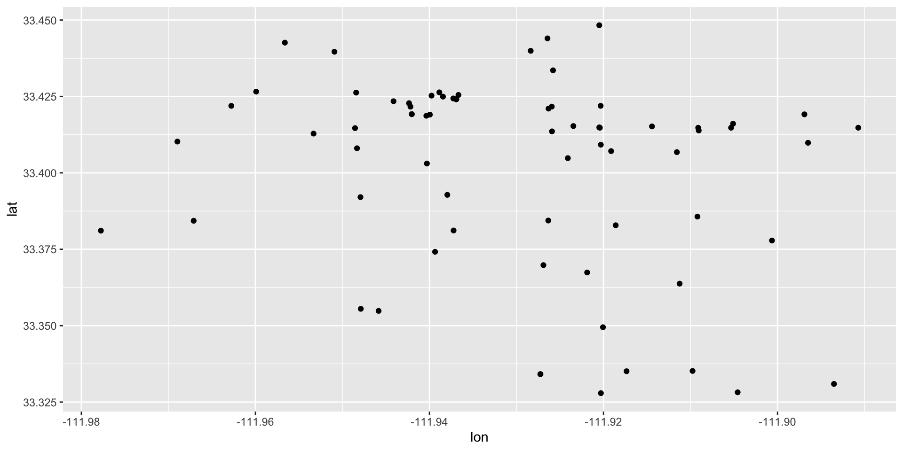
This should look familiar in that we have the basic structure of the ggplot: the data = and the mapping = aes() arguments. The only difference now is that we have used the lon variable as the aesthetic mapping for the x-axis and the lat variable for the aesthetic mapping for the y-axis. Then, geom_point() just adds points on the coordinates we have identified with aes(). This plot tells us: where the observations are located, whether there are visible clusters, how the points are distributed across physical space.
But, this isn’t really that useful because it doesn’t look like a map! We don’t have a geographical context (unless you happen to know the lat/lon for Tempe, AZ).
Adding Geographic Context
To make the plot feel like a real map, we need a boundary layer underneath the points. A boundary layer could be a city outline, a neighborhood map, a precinct boundary, a census tract layer, anything that allows to draw a shape to add geographic context. This gives the coordinate points a frame of reference. Instead of just seeing dots in space, students can see where those dots fall within an actual geographic area. That is also the point where we move from “plotting coordinates” to “mapping data.”
The tigris Package and the sf Package
tigris is an R package that provides direct access to U.S. Census Bureau geographic boundary data. Rather than downloading files with geographic boundaries manually from a website, tigris allows us to retrieve map boundaries directly inside R using simple functions. These boundaries are returned as spatial (sf) objects, which means they work naturally with ggplot2 and the layering function geom_sf().
As we begin working with maps in R, we need a way for R to recognize that our data represents geographic space rather than ordinary numbers. This is the purpose of the sf package where the term “sf” stands for: simple features. An sf object is a special type of data frame that stores the original dataset, the geographic coordinates, the spatial geometry, and information about the coordinate system. In other words, an sf object allows R to understand that the data contains locations.
We will use tigris and sf, so first install the packages and then load the library for each:
install.packages( "tigris" )
install.packages( "sf" )
library( tigris )
library( sf )In tigris, the places() function retrieves incorporated places and city boundaries from the Census Bureau. We can download the city boundaries in Arizona as an sf object.
az_places <- places( state = "AZ", year = 2024 )
|
| | 0%
|
|= | 1%
|
|= | 2%
|
|== | 2%
|
|== | 3%
|
|== | 4%
|
|=== | 4%
|
|==== | 5%
|
|==== | 6%
|
|===== | 7%
|
|===== | 8%
|
|====== | 8%
|
|====== | 9%
|
|======= | 9%
|
|======= | 10%
|
|======= | 11%
|
|======== | 11%
|
|======== | 12%
|
|========= | 12%
|
|========= | 13%
|
|========== | 14%
|
|========== | 15%
|
|=========== | 15%
|
|=========== | 16%
|
|============ | 17%
|
|============ | 18%
|
|============= | 19%
|
|============== | 20%
|
|=============== | 21%
|
|=============== | 22%
|
|================ | 23%
|
|================= | 24%
|
|================= | 25%
|
|================== | 26%
|
|=================== | 27%
|
|==================== | 28%
|
|==================== | 29%
|
|===================== | 30%
|
|====================== | 31%
|
|====================== | 32%
|
|======================= | 33%
|
|======================== | 34%
|
|======================== | 35%
|
|========================= | 36%
|
|========================== | 37%
|
|=========================== | 38%
|
|=========================== | 39%
|
|============================ | 40%
|
|============================= | 41%
|
|============================= | 42%
|
|============================== | 43%
|
|=============================== | 44%
|
|=============================== | 45%
|
|================================ | 45%
|
|================================ | 46%
|
|================================= | 47%
|
|================================= | 48%
|
|================================== | 48%
|
|================================== | 49%
|
|=================================== | 49%
|
|=================================== | 50%
|
|=================================== | 51%
|
|==================================== | 51%
|
|==================================== | 52%
|
|===================================== | 52%
|
|===================================== | 53%
|
|===================================== | 54%
|
|====================================== | 54%
|
|====================================== | 55%
|
|======================================= | 55%
|
|======================================= | 56%
|
|======================================== | 56%
|
|======================================== | 57%
|
|======================================== | 58%
|
|========================================= | 58%
|
|========================================= | 59%
|
|========================================== | 59%
|
|========================================== | 60%
|
|=========================================== | 61%
|
|=========================================== | 62%
|
|============================================ | 62%
|
|============================================ | 63%
|
|============================================= | 64%
|
|============================================== | 65%
|
|============================================== | 66%
|
|=============================================== | 67%
|
|================================================ | 68%
|
|================================================ | 69%
|
|================================================= | 70%
|
|================================================== | 71%
|
|================================================== | 72%
|
|=================================================== | 73%
|
|==================================================== | 74%
|
|==================================================== | 75%
|
|===================================================== | 75%
|
|===================================================== | 76%
|
|====================================================== | 77%
|
|====================================================== | 78%
|
|======================================================= | 78%
|
|======================================================= | 79%
|
|======================================================== | 80%
|
|======================================================== | 81%
|
|========================================================= | 81%
|
|========================================================= | 82%
|
|========================================================== | 82%
|
|========================================================== | 83%
|
|=========================================================== | 84%
|
|=========================================================== | 85%
|
|============================================================ | 85%
|
|============================================================ | 86%
|
|============================================================= | 86%
|
|============================================================= | 87%
|
|============================================================= | 88%
|
|============================================================== | 88%
|
|============================================================== | 89%
|
|=============================================================== | 89%
|
|=============================================================== | 90%
|
|=============================================================== | 91%
|
|================================================================ | 91%
|
|================================================================ | 92%
|
|================================================================= | 92%
|
|================================================================= | 93%
|
|================================================================== | 94%
|
|================================================================== | 95%
|
|=================================================================== | 95%
|
|=================================================================== | 96%
|
|==================================================================== | 96%
|
|==================================================================== | 97%
|
|==================================================================== | 98%
|
|===================================================================== | 98%
|
|===================================================================== | 99%
|
|======================================================================| 99%
|
|======================================================================| 100%Now that the Arizona boundaries are loaded, with az_places, we can isolate Tempe using the filter function in dplyr. This will give us a polygon layer representing the city boundary for Tempe.
Previously, we were plotting coordinates directly using geom_point().
Now we are introducing spatial layers, polygon geometry, and geom_sf(). The difference is that the layers now represent geographic information.
The boundary data retrieved from tigris is already stored as an sf object (yay!). That means it works naturally with geom_sf(). We can see this by simply passing it to a ggplot:
ggplot() +
geom_sf( data = tempe_boundary )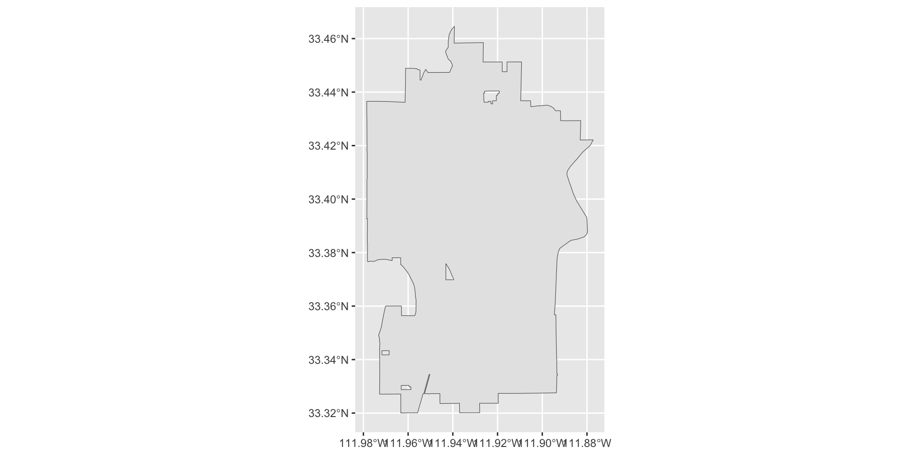
Now we have our boundary and we just need to add our points. However, our incident data is still a regular data frame with latitude and longitude columns. The next step will be converting the incident data into an sf object as well so both layers can work together within the same mapping framework.
We create an sf object using the st_as_sf() function:
Let’s take a closer look here:
- we pass the data object,
tidy_tempe_hate, and tell the function that the coordinates are stored with the variables nameslonandlatusingcoords = c("lon", "lat") - the argument
crs =is the “coordinate reference system” (CRS) which tells R how to interpret geographic coordinates and the most common CRS for latitude/longitude data is EPSG:4326
If you take a look at the object we created, tempe_hate_sf, you will see that it has mapped the coordinate information to a column called geometry.
tempe_hate_sf$geometryGeometry set for 71 features
Geometry type: POINT
Dimension: XY
Bounding box: xmin: -111.9778 ymin: 33.32791 xmax: -111.8907 ymax: 33.4483
Geodetic CRS: WGS 84
First 5 geometries:Before conversion, the coordinates are ordinary numeric columns. But, after conversion geometry becomes part of the dataset and R recognizes the data as spatial. This allows us to use the dataset with geom_sf(). (YAY!)
Now, we just use geom_sf to add the tempe_hate_sf object to our plot:
ggplot() +
geom_sf( data = tempe_boundary ) +
geom_sf( data = tempe_hate_sf )At this point, the geometry is handled automatically by sf so we no longer need to manually specify x = lon and y = lat in the aesthetic layer.
Improving the Map Appearance
We have our basic plot of the points and the boundary for the city. This gives us the default spatial plot. It is useful, but it is still very plain. At this stage, the map shows the points, but it does not yet make the spatial pattern very easy to read. As we did with geom_point for ggplot, let’s take a look at some options for improving our plot. As we go through these, try different values to get a sense of how the arguments work.
Add transparency
When there are many overlapping points, transparency helps reveal where incidents are concentrated. The transparency of the points is controlled with the alpha = argument where higher values make the points less transparent (and lower values make it more transparent).
ggplot() +
geom_sf( data = tempe_boundary ) +
geom_sf( data = tempe_hate_sf, alpha = 0.6 )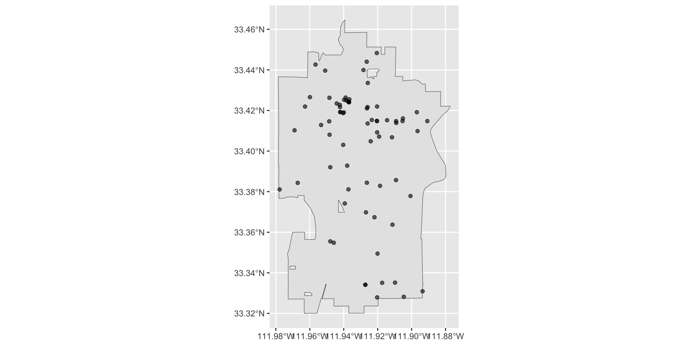
Transparency helps when we have a lot of cases because overlapping points become easier to see, dense areas appear darker, and clustering becomes more visually obvious. There are a few cases that appear darker, this is because they are actually overlapping cases. There are only 71 cases in the Tempe hate crime dataset, but if we were working with tens or hundreds of thousands of cases, then transparency can be very userful.
Change the color
You can also make the points easier to interpret by changing the point color.
ggplot() +
geom_sf( data = tempe_boundary ) +
geom_sf( data = tempe_hate_sf, alpha = 0.6, color = "firebrick" )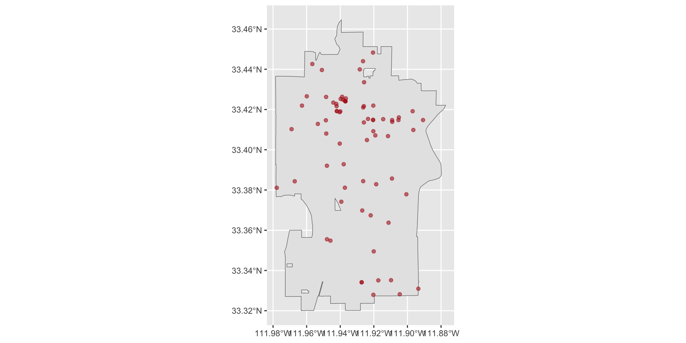
We can also make adjustments to the background image given with the tempe_boundary object.
ggplot() +
geom_sf( data = tempe_boundary, color = "blue", fill = "grey", alpha = 0.8 ) +
geom_sf( data = tempe_hate_sf, alpha = 0.6, color = "firebrick" )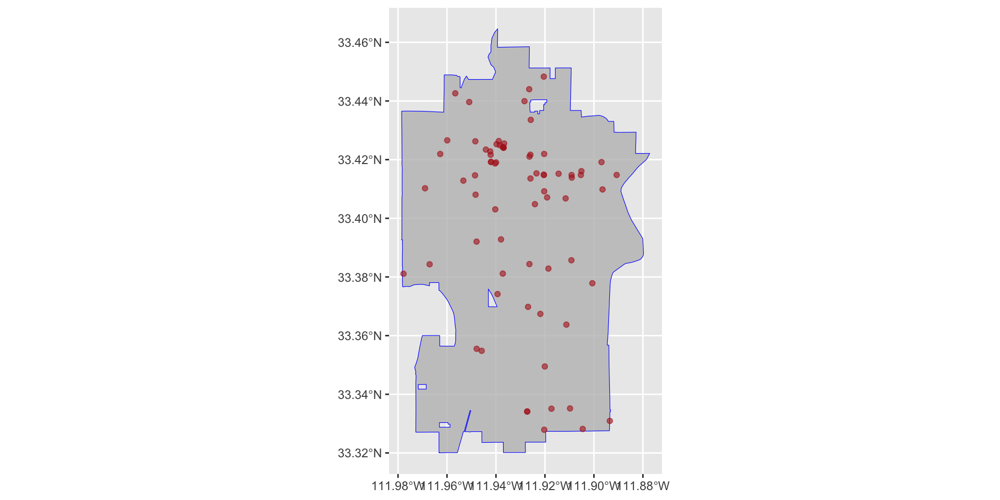
Here, color = controls the color of the line that defines the boundary and fill = controls the color inside the boundary.
Adjust point size
If the points are too small, the map may be hard to read. If they are too large, they may overwhelm the plot.
ggplot() +
geom_sf( data = tempe_boundary, color = "blue", fill = "grey", alpha = 0.8 ) +
geom_sf( data = tempe_hate_sf, alpha = 0.6, color = "firebrick", size = 2 )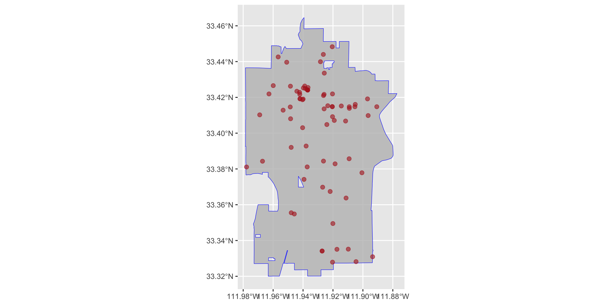
Use a cleaner theme
A map usually looks better with a simpler background.
ggplot() +
geom_sf( data = tempe_boundary, color = "blue", fill = "grey", alpha = 0.8 ) +
geom_sf( data = tempe_hate_sf, alpha = 0.6, color = "firebrick", size = 2 ) +
theme_minimal()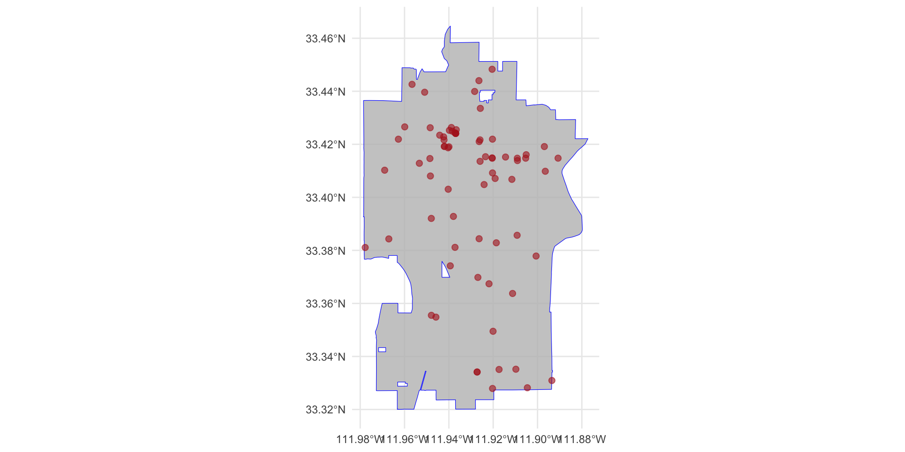
Using types of incidents
We could also include additional information such as the type of bias, bias_type_clean. or type of incident, offense_type_clean.
Let’s start by coloring the plot based on bias type. To do so, we need to specify this in the aes() function using the color = argument:
ggplot() +
geom_sf( data = tempe_boundary, color = "blue", fill = "grey", alpha = 0.8 ) +
geom_sf(
data = tempe_hate_sf,
mapping = aes( color = bias_type_clean ),
alpha = 0.6,
size = 2
) +
theme_minimal()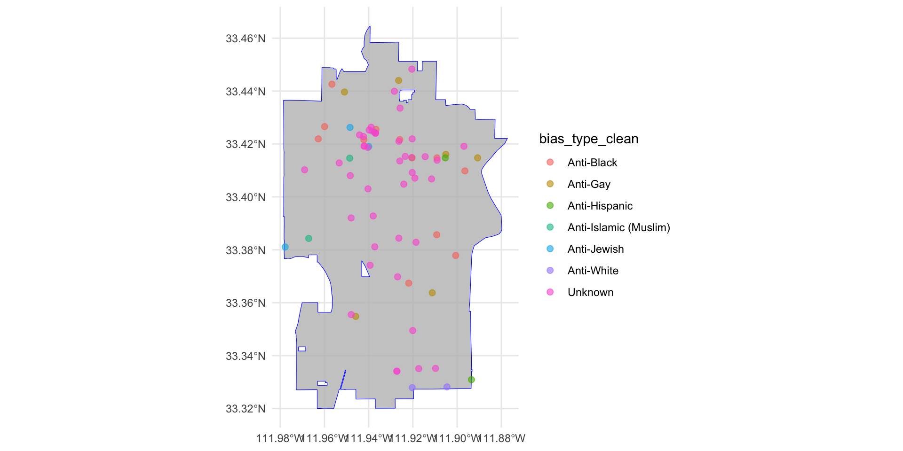
Now, let’s use shapes to distinguish different types of incidents. To do so, we need to specify this in the aes() function (again) using the shape = argument:
ggplot() +
geom_sf( data = tempe_boundary, color = "blue", fill = "grey", alpha = 0.8 ) +
geom_sf(
data = tempe_hate_sf,
mapping = aes(
color = bias_type_clean,
shape = offense_type_clean
),
alpha = 0.6,
size = 2
) +
theme_minimal()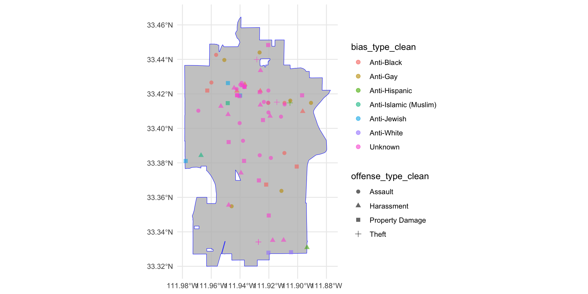
That looks better!
Additional revisions
As we saw with ggplot, we can alter the various elements in the plot such as the title, labels, etc. Since we are working within a ggplot framework, we can use all the same functions that we used before. Let’s make some revisions to improve the visibility of our plot.
ggplot() +
geom_sf( data = tempe_boundary, color = "blue", fill = "grey", alpha = 0.8 ) +
geom_sf( data = tempe_hate_sf, mapping = aes( color = bias_type_clean, shape = offense_type_clean ), alpha = 0.6, size = 2 ) +
labs(
title = "Hate Crime in Tempe",
color = "Bias Type",
shape = "Offense Type" ) +
theme_minimal() 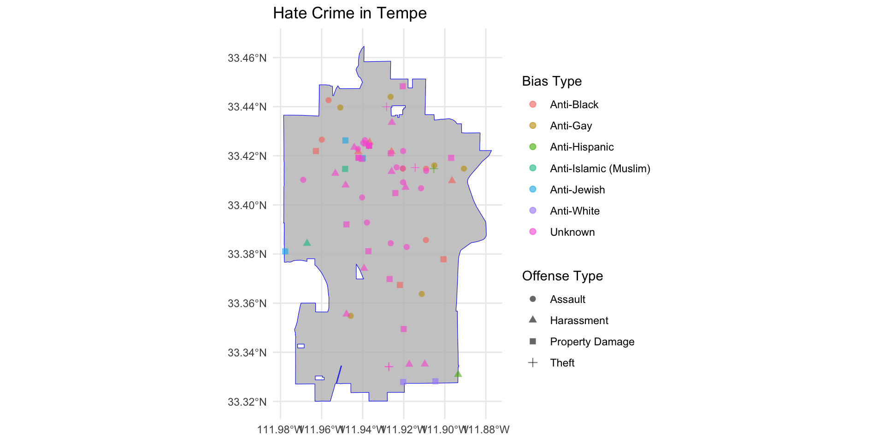
Now, let’s fix the coordinate information since that isn’t really useful and is clutter. To do that, we need to use arguments in the theme() function. Specifically, we will use the element_blank() function to tell various arguments that we want them to be blank. These arguments are: axis.text = and axis.tick = which controls the visual information on the axes, and panel.grid.major = and panel.grid.minor = which controls the gridlines in the background.
ggplot() +
geom_sf( data = tempe_boundary, color = "blue", fill = "grey", alpha = 0.8 ) +
geom_sf( data = tempe_hate_sf, mapping = aes( color = bias_type_clean, shape = offense_type_clean ), alpha = 0.6, size = 2 ) +
labs(
title = "Hate Crime in Tempe",
color = "Bias Type",
shape = "Offense Type" ) +
theme_minimal() +
theme(
legend.position = "right",
axis.text = element_blank(),
axis.ticks = element_blank(),
panel.grid.major = element_blank(),
panel.grid.minor = element_blank()
)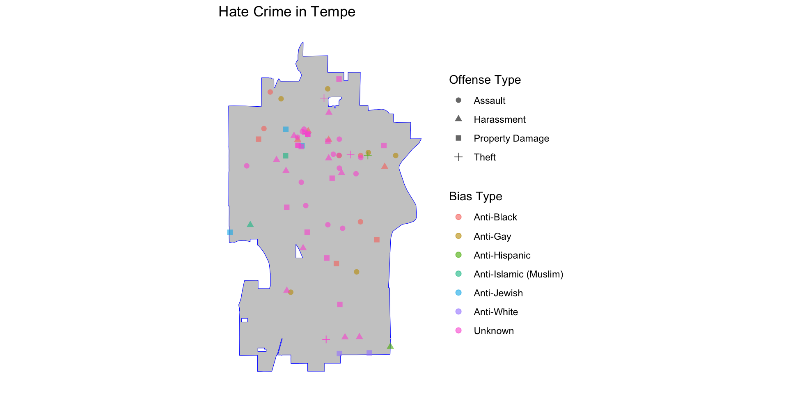
Working with X and Y Coordinate Data
Up to this point, we have used latitude and longitude because those values are easy to recognize. Now we will look at a second common format: projected coordinates. Unlike latitude and longitude, these values are not in degrees. They are usually measured in feet or meters, depending on the coordinate system. We are still building a map, the only difference is that now the x and y values come from a projected coordinate system instead of geographic coordinates. So the basic plotting logic stays the same, we just uses a different coordinate format.
Let’s take a look at the tidy_tucson_bike data, which are 1,837 bicycle related traffic incidents reported to the Tucson Police Department. These data do not have lat/lon coordinates, but have x and y coordinates, stored in x_coord and y_coord, respectively.
[,1] [,2]
[1,] 1009837.3 465525.8
[2,] 1012423.0 411439.0
[3,] 1003354.6 456186.9
[4,] 1018621.8 451192.1
[5,] 1027516.5 435241.4
[6,] 996822.2 448869.5
[7,] 992634.9 444034.9
[8,] 1000760.7 450970.2
[9,] 989928.7 473157.9
[10,] 1042681.6 435293.6
[11,] 990628.9 413742.7
[12,] 999429.2 451419.3
[13,] 990223.7 447826.8
[14,] 1016790.8 444733.7
[15,] 1009957.8 456330.7
[16,] 996469.3 447912.8
[17,] 1000760.7 450970.2
[18,] 1023072.5 445918.6
[19,] 1009957.8 456330.7
[20,] 1013956.1 453778.9The data still have one column for horizontal position and one column for vertical position, but what coordinate system produced these values? That is where the CRS matters again.
Boundary and Position Data
First, we need to get the boundary data from Tucson using the tigris package. Then, filter it to Tucson using dyplr.
For Tucson-area public safety data, one likely projection is 2223, which corresponds to: NAD83 / Arizona Central (ftUS). This CRS is commonly used in Arizona municipal and county GIS systems.
The tigris package returns information using latitude and longitude as the coordiate system, so we need to transform our tucson_boundary object using the st_transform() function to match the CRS we will use below.
tucson_boundary <- st_transform( tucson_boundary, crs = 2223 )As we did before, we need to take our existing data and create an sf object. However, we need to alter the coords = argument and the crs = argument. We create an sf object using the st_as_sf() function:
Now, we just do as before and plug these objects into our geom_sf functions:
ggplot() +
geom_sf( data = tucson_boundary, color = "blue", fill = "grey", alpha = 0.8 ) +
geom_sf( data = tucson_bike_sf, color = "darkred", alpha = 0.6, size = 2 ) +
theme_minimal() +
labs( title = "Bicycle Related Incidents in Tucson, AZ" ) +
theme(
axis.text = element_blank(),
axis.ticks = element_blank(),
panel.grid.major = element_blank(),
panel.grid.minor = element_blank()
)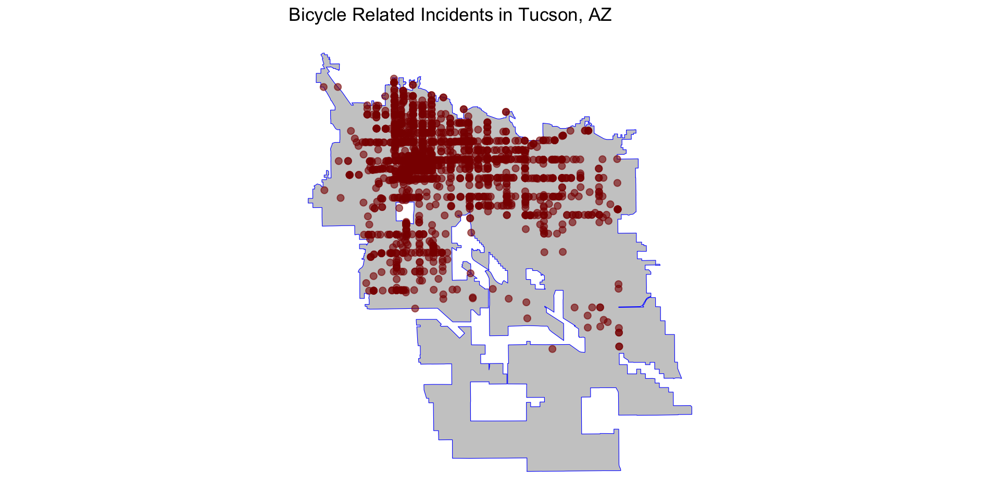
NEED EXERCISES FOR TEST YOUR KNOWLEDGE